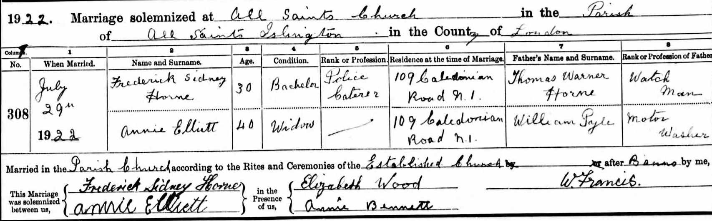

Annie Horne (née Elliett) 1885 - c1951
[ Home ] | [ Calendar ] | [ Surnames Index ] | [ Census Index ] | [ Family History ]Annie Elliett, the wife of Frederick Sidney Horne (the first cousin twice-removed on the father's side of Nigel Horne), was born on Mar 9, 18851. She married Frederick (a police caterer) at All Saints, Islington, London, England on Jul 29, 19223.
During her life, she was living at 109 Caledonian Road in Islington in 1922; and at 75 Bingfield Street in Islington on Sep 29, 19391.
She died c. Feb 1951 in Islington2.
Citations
- 1939 Register - Findmypast (was the wife of the head of the household)
- England & Wales deaths 1837-2007 - Findmypast
- England & Wales Marriages 1837-2005 - Findmypast
Media
Frederick Sidney Horne - Annie Elliett Marriage

1939 Register Transcription - TNA-R39-0298-0298C-008-25
England & Wales deaths 1837-2007 - BMD/D/1951/1/AZ/000700/140
England & Wales Marriages 1837-2005 - BMD-M-1922-3-AZ-000383-022
England & Wales marriages 1837-2005 Image - BMD-M-1922-3-AZ-000383
Family Tree

Generated by ged2site. Last updated on Jun 11, 2024